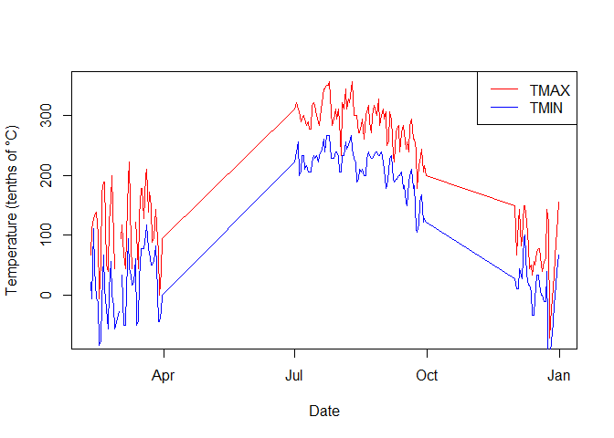

The ghcn package provides a streamlined interface for accessing and analyzing Global Historical Climatology Network - Daily (GHCN-D) data hosted on Amazon Web Services (AWS). By leveraging the AWS-hosted GHCN-D dataset, this package enables researchers and data scientists to quickly access vast amounts of historical climate data without worrying about API rate limits or complex query constructions. Whether you’re conducting large-scale climate studies, analyzing local weather patterns, or integrating climate data into broader research projects, ghcn provides a user-friendly and efficient toolset for exploring and utilizing GHCN-D data.
Installation
pak
You can install the development version of ghcn from GitHub with:
# install.packages("pak")
pak::pak("joshbrinks/ghcn")Cloning the repository
If you want to clone the repository and install the package locally, follow these steps:
-
Clone the repository:
-
Open R or RStudio and set your working directory to the cloned repository:
setwd("path/to/ghcn") -
Install the package:
devtools::install()
Example
Here’s a quick example of how to use the main functions in the ghcn package:
library(ghcn)
# Find weather stations near New York City
nyc_stations <- find_stations_aws(lat = 40.7128, lon = -74.0060, radius = 50)
# Get inventory for the first station
inventory <- get_inventory_aws(nyc_stations$id[1])
# Fetch temperature data for 2022
data <- get_data_aws(
station_id = nyc_stations$id[1],
start_date = "2022-01-01",
end_date = "2022-12-31",
variables = c("TMAX", "TMIN")
)
# Basic plot of the data
plot(data$DATE, data$TMAX, type = "l", col = "red",
xlab = "Date", ylab = "Temperature (tenths of °C)")
lines(data$DATE, data$TMIN, col = "blue")
legend("topright", legend = c("TMAX", "TMIN"), col = c("red", "blue"), lty = 1)
For more detailed examples and usage, please refer to the package vignettes.